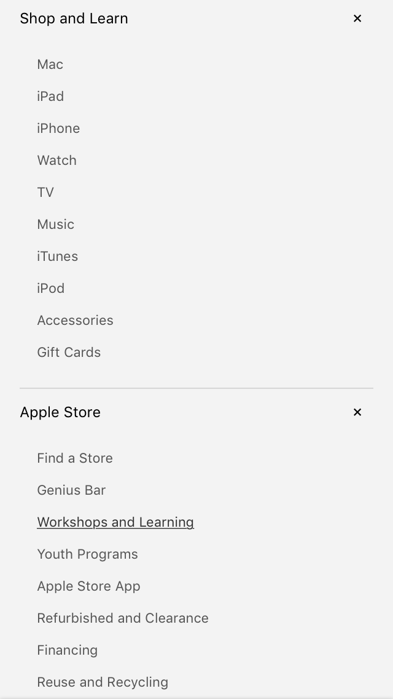
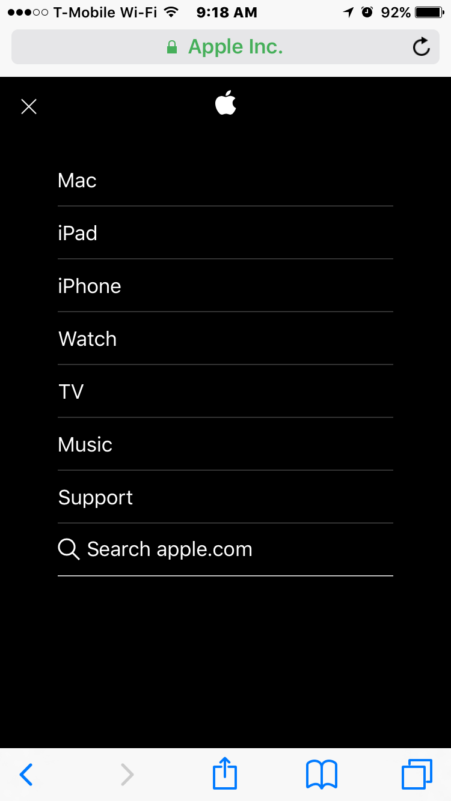
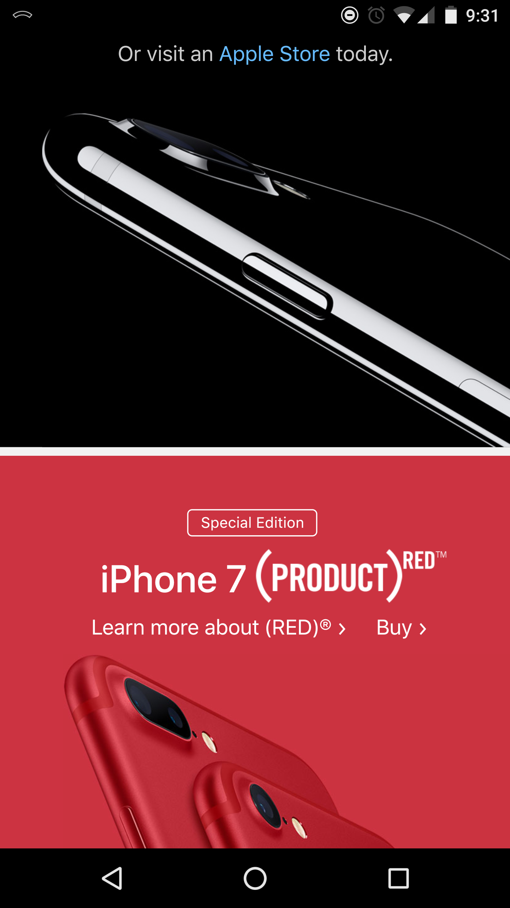
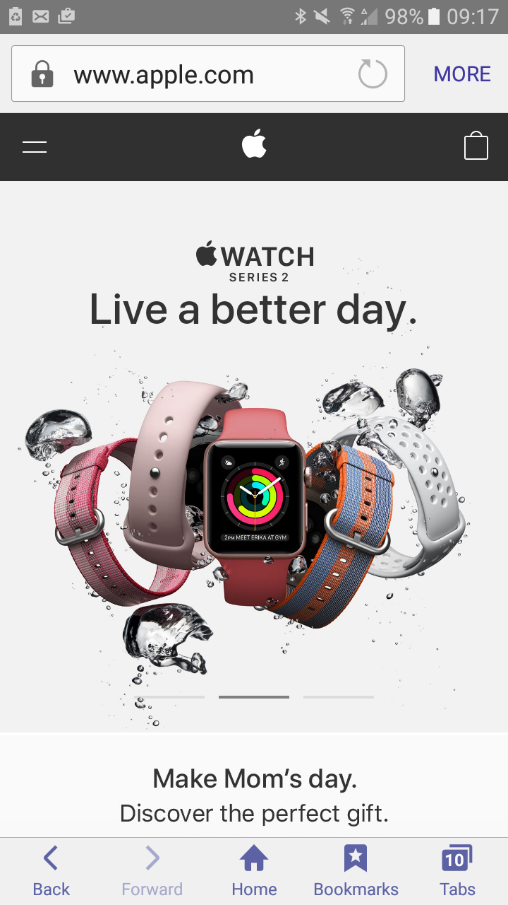
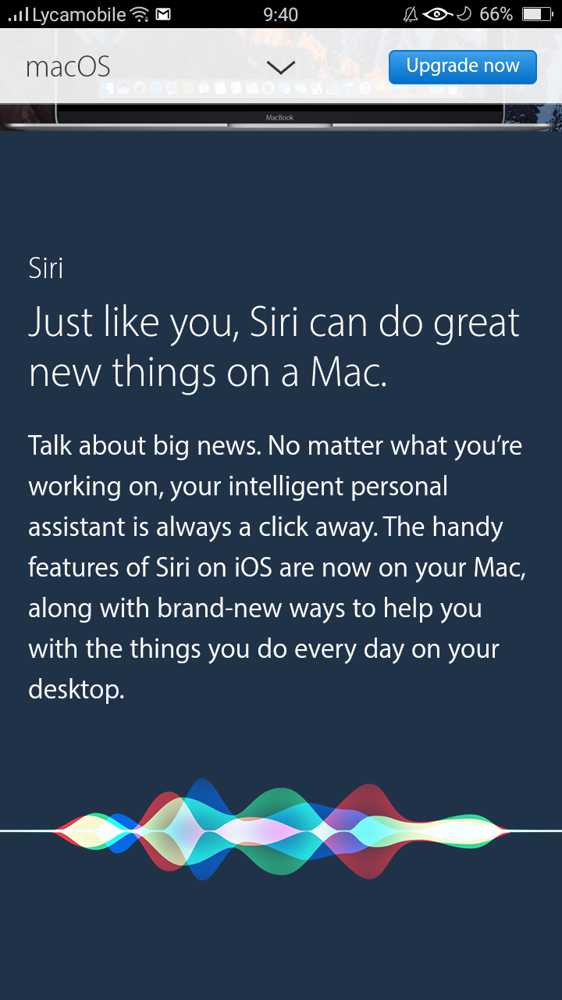

Design - Analysis Assessment
https://www.apple.com/
Design Principles
Proximity — Colin Fotheringham

Apple’s webpage holds a lot of information about their various
products. With this example of proximity it shows how Apple
was able to organize their content in a way that would make
more sense to the user. Apple put each of the various content
under tabs that helps separate the information. Users are able
to quickly find and locate the information that they desire.
Alignment — Daniel Guzman

The alignment Apple.com is great and organized. Everything that
is in their website is connected to each other and its about their
products. The first thing you see its their newest product which
is the Iphone 7 Product Red. The alignment is connected to each
other by different size of boxes. Their Menu bar contains all of their
products and support they offer.
Repetition — Mason Rowley

The repetition that is used here can be seen in several different
elements. The first is the use of square shapes. The different kinds
of phones can be seen with in them. They are separated with a
smaller stripe of white to show where one product ends and another
begins. There is also repetition in the way the phones are lined up.
All the phones they sell are lined up the same way to show case size
and colors. There are also are lots colors being alternated between
light and dark all over the website.
Contrast — Blair Furner

The contrast in this image is very well done. The central image of the
watches stands out and is the first thing to catch your eye due to the
colors and unique design. Also it is very contrasted due to it being the
largest image on the page. The addition of the white and black contrast
adds a very simple but effective look.
Typography — Vishal Peter

The image explains the typography very well. As the big center
paragraph catches the attention of the people first and then the
explanotary one. The font size well arranged. The other good
thing about this paragraph is the left handed arrangement of the
paragraph which keeps the reader focus.
Site Purpose Statement
The Purpose of Apple.com is to sell and promote their products.
Target Audience
- Age: 18 - 50
- Occupation: Students, Teachers, White collar jobs
- Income: $40,000+
- Other: Hip, younger, people who care a lot about usability.
Persona
- Name: Bill Gates

- Occupation: Microsoft CEO
- Primary Device: Windows PC
- Quote: Your most unhappy customers are your greatest source of learning